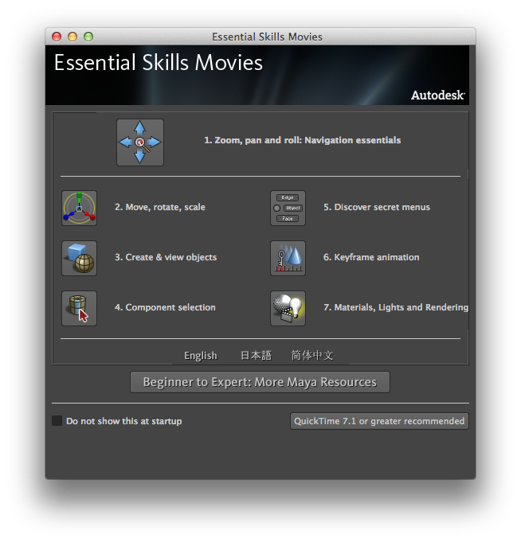
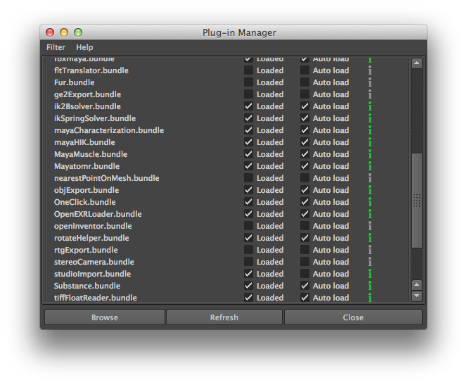
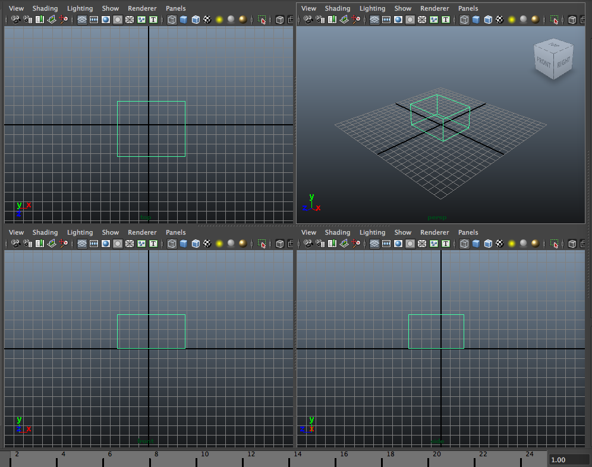
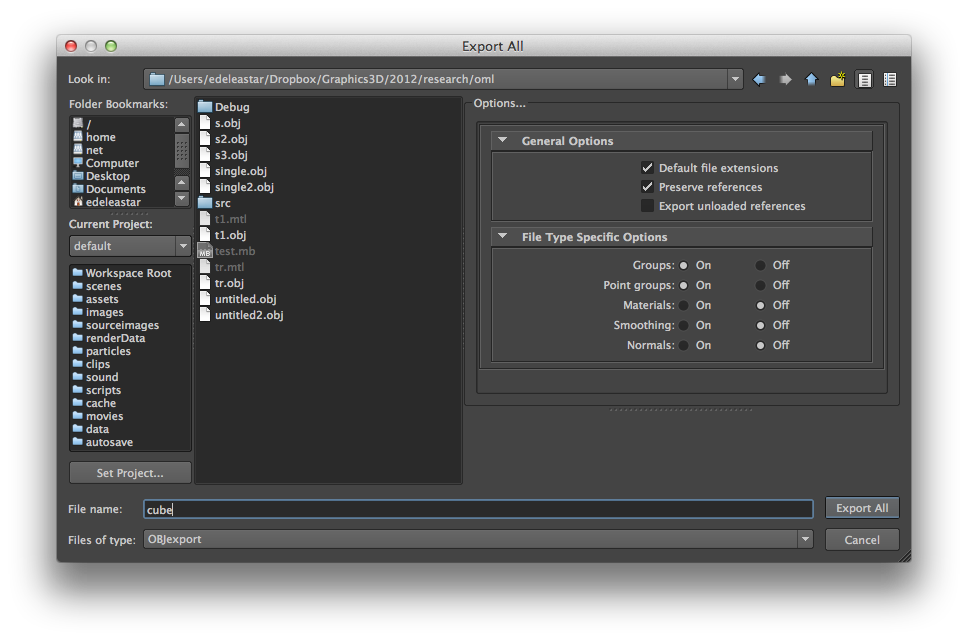
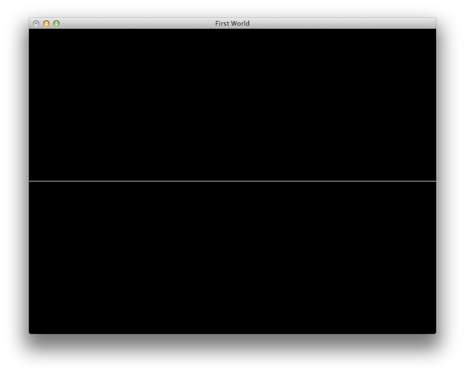
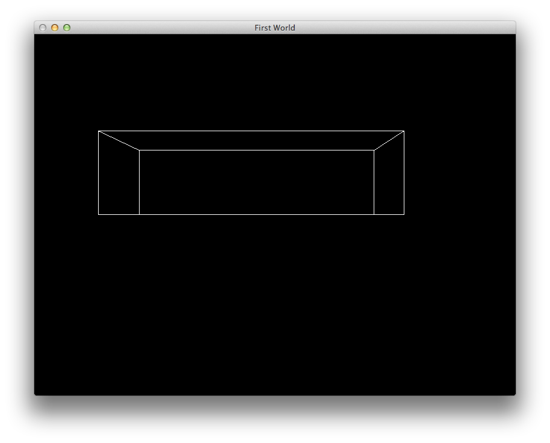

Download and install Maya
Generate a simple model
Explore this model - and devise a set of classes to load and render it
Download and install Maya on your workstation. Free students versions are available here:
http://students.autodesk.com/?nd=download_center
You will need to register, acquire serial numbers, and activate the product.
Once launched, it is worth talking the short tutorial movies before commencing:




(Note the "File Type Specific Options" selected on the right).
Open the file "cube.obj" - it might look something like this:
# This file uses centimeters as units for non-parametric coordinates.
g default
v -3.271605 0.000000 3.333333
v 3.827160 0.000000 3.333333
v -3.271605 3.566200 3.333333
v 3.827160 3.566200 3.333333
v -3.271605 3.566200 -2.407407
v 3.827160 3.566200 -2.407407
v -3.271605 0.000000 -2.407407
v 3.827160 0.000000 -2.407407
vt 0.375000 0.000000
vt 0.625000 0.000000
vt 0.375000 0.250000
vt 0.625000 0.250000
vt 0.375000 0.500000
vt 0.625000 0.500000
vt 0.375000 0.750000
vt 0.625000 0.750000
vt 0.375000 1.000000
vt 0.625000 1.000000
vt 0.875000 0.000000
vt 0.875000 0.250000
vt 0.125000 0.000000
vt 0.125000 0.250000
g pCube1
f 1/1 2/2 4/4 3/3
f 3/3 4/4 6/6 5/5
f 5/5 6/6 8/8 7/7
f 7/7 8/8 2/10 1/9
f 2/2 8/11 6/12 4/4
f 7/13 1/1 3/3 5/14
Review the format of this file briefly here:
http://en.wikipedia.org/wiki/Wavefront_.obj_file
Create a new C++ project - called lab06b_wavefront_1
Incorporate these sources from the assignment 1 solution:
#pragma once
struct Color
{
float R;
float G;
float B;
float A;
static Color White;
static Color Yellow;
static Color Red;
static Color Magenta;
static Color Cyan;
static Color Green;
static Color Black;
static Color Blue;
Color();
Color(float r, float g, float b, float a=1.0f);
Color(int r, int g, int b, int a=255);
void render();
void renderClear();
};
#include "libopengl.h"
#include "Color.h"
Color Color::Black (0, 0, 0);
Color Color::Blue (0, 0, 255);
Color Color::Green (0, 255, 0);
Color Color::Cyan (0, 255, 255);
Color Color::Red (255, 0, 0);
Color Color::Magenta (255, 0, 255);
Color Color::Yellow (255, 255, 0);
Color Color::White (255, 255, 255);
Color::Color()
{
R = G = B = A = 1.0f;
}
Color::Color(float r, float g, float b, float a)
{
R = r;
G = g;
B = b;
A = a;
}
Color::Color(int r, int g, int b, int a)
{
R = (float) r / 255.0f;
G = (float) g / 255.0f;
B = (float) b / 255.0f;
A = (float) a / 255.0f;
}
void Color::render()
{
glColor4f(R,G,B,A);
}
void Color::renderClear()
{
glClearColor(R,G,B, 1.0f);
}
#pragma once
#include <istream>
struct Vector3
{
float X;
float Y;
float Z;
static Vector3 UnitX;
static Vector3 UnitY;
static Vector3 UnitZ;
Vector3(float x, float y, float z);
Vector3(float value);
Vector3();
Vector3(std::istream& is);
void translate();
void rotate (float angle);
void render();
};
#include "libopengl.h"
#include "vector3.h"
using namespace std;
Vector3 Vector3::UnitX(1.0f, 0.0f, 0.0f);
Vector3 Vector3::UnitY(0.0f, 1.0f, 0.0f);
Vector3 Vector3::UnitZ(0.0f, 0.0f, 1.0f);
Vector3::Vector3(float x, float y, float z)
: X(x)
, Y(y)
, Z(z)
{}
Vector3::Vector3(float value)
: X(value)
, Y(value)
, Z(value)
{}
Vector3::Vector3()
: X(0)
, Y(0)
, Z(0)
{}
Vector3::Vector3(istream &is)
{
is >> X >> Y >> Z;
}
void Vector3::render()
{
glVertex3f(X, Y, Z);
}
void Vector3::translate()
{
glTranslatef(X,Y,Z);
}
void Vector3::rotate (float angle)
{
glRotatef(angle, X,Y,Z);
}
#pragma once
#include <string>
#define theWorld World::GetInstance()
class World
{
public:
static World& GetInstance();
void setCmdlineParams(int*argc, char **argv);
void initialize(int width, int height, std::string name);
void start();
void render();
void keyPress(unsigned char ch);
private:
static World* s_World;
int *argc;
char **argv;
};
#include "world.h"
#include "libopengl.h"
#include "vector3.h"
#include "color.h"
#include <fstream>
using namespace std;
World* World::s_World = NULL;
void reshape(int w, int h)
{
glViewport(0, 0, (GLsizei) w, (GLsizei) h); //set the viewportto the current window specifications
glMatrixMode ( GL_PROJECTION); //set the matrix to projection
glLoadIdentity();
gluPerspective(60, (GLfloat) w / (GLfloat) h, 1.0, 1000.0); //set the perspective (angle of sight, width, height, ,depth)
glMatrixMode ( GL_MODELVIEW); //set the matrix back to model
}
void renderScene(void)
{
World::GetInstance().render();
}
void keyboard(unsigned char key, int x, int y)
{
World::GetInstance().keyPress(key);
}
World& World::GetInstance()
{
if (s_World == NULL)
{
s_World = new World();
}
return *s_World;
}
void World::setCmdlineParams(int*argc, char **argv)
{
this->argc = argc;
this->argv = argv;
}
void World::render()
{
glClearColor(0.0, 0.0, 0.0, 1.0);
glClear(GL_COLOR_BUFFER_BIT | GL_DEPTH_BUFFER_BIT);
glLoadIdentity();
glutSwapBuffers();
}
void World::keyPress(unsigned char ch)
{
glutPostRedisplay();
}
void World::initialize(int width, int height, std::string name)
{
glutInit(argc, argv);
glutInitDisplayMode(GLUT_DOUBLE | GLUT_RGB | GLUT_DEPTH);
glutInitWindowSize(width, height);
glutCreateWindow(name.c_str());
Color::Black.renderClear();
glEnable(GL_DEPTH_TEST);
glFrontFace(GL_CCW);
glPolygonMode(GL_FRONT,GL_LINE);
glPolygonMode(GL_BACK,GL_LINE);
glMatrixMode(GL_PROJECTION);
glLoadIdentity();
gluPerspective(60.0f, 1, 1.0, 1000.0);
glMatrixMode(GL_MODELVIEW);
glLoadIdentity();
//glTranslatef(0.0f, 0.0f, -200.0f);
glutKeyboardFunc(keyboard);
glutReshapeFunc(reshape);
glutDisplayFunc(renderScene);
}
void World::start()
{
glutMainLoop();
}
#include "world.h"
int main(int argc, char* argv[])
{
theWorld.setCmdlineParams(&argc, argv);
theWorld.initialize(800,600, "First World");
theWorld.start();
return 0;
}
You should have your own version of libopengl.h
Build and test
Have a close look at the world class - and gain an understanding of its relationship to glut.
# This file uses centimeters as units for non-parametric coordinates.
g default
v -5.251874 0.000000 0.717793
v 3.835506 0.000000 0.717793
v -5.251874 2.495711 0.717793
v 3.835506 2.495711 0.717793
v -5.251874 2.495711 -2.094055
v 3.835506 2.495711 -2.094055
v -5.251874 0.000000 -2.094055
v 3.835506 0.000000 -2.094055
vt 0.375000 0.000000
vt 0.625000 0.000000
vt 0.375000 0.250000
vt 0.625000 0.250000
vt 0.375000 0.500000
vt 0.625000 0.500000
vt 0.375000 0.750000
vt 0.625000 0.750000
vt 0.375000 1.000000
vt 0.625000 1.000000
vt 0.875000 0.000000
vt 0.875000 0.250000
vt 0.125000 0.000000
vt 0.125000 0.250000
g pCube1
f 1/1 2/2 4/4 3/3
f 3/3 4/4 6/6 5/5
f 5/5 6/6 8/8 7/7
f 7/7 8/8 2/10 1/9
f 2/2 8/11 6/12 4/4
f 7/13 1/1 3/3 5/14
We see:
opening comment (begining with #)
a group (denoted 'g') - called default
A set of 8 vertices (denoted by 'vt')
A collection of vertex texture coordinates ('vt')
another group - this time called 'pCube1'
set of faces, where each face is:
*vertex index (into default), '/', texture index (also into default).
Reverse engineering the above, what we have is a set of vertices as folllows:
face 1
-5.25187 0 0.717793
3.83551 0 0.717793
3.83551 2.49571 0.717793
-5.25187 2.49571 0.717793
face 2
-5.25187 2.49571 0.717793
3.83551 2.49571 0.717793
3.83551 2.49571 -2.09405
-5.25187 2.49571 -2.09405
face 3
-5.25187 2.49571 -2.09405
3.83551 2.49571 -2.09405
3.83551 0 -2.09405
-5.25187 0 -2.09405
face 4
-5.25187 0 -2.09405
3.83551 0 -2.09405
3.83551 0 0.717793
-5.25187 0 0.717793
face 5
3.83551 0 0.717793
3.83551 0 -2.09405
3.83551 2.49571 -2.09405
3.83551 2.49571 0.717793
face 6
-5.25187 0 -2.09405
-5.25187 0 0.717793
-5.25187 2.49571 0.717793
-5.25187 2.49571 -2.09405
f 1/1 2/2 4/4 3/3
... each of these represents a vertex/texture index into the 'default' group as we have demonstrated.
We can abstract this into a "Face" class:
struct Face
{
int vertices[3];
int textures[3];
Face(std::istream& is);
void render(std::vector <Vector3>&);
};
Face::Face(istream& is)
{
char ch1;
for (int i = 0; i < 4; i++)
{
string separator;
is >> vertices[i];
is >> ch1;
is >> textures[i];
}
}
void Face::render()
{
for (int i=0; i<4; i++)
{
cout << vertices[i] << " " << vertices[i] << " " << vertices[i] << endl;
}
}
struct ModelObject
{
std::string name;
std::vector<Face> faces;
std::vector <Vector3> vertices;
ModelObject();
ModelObject(std::istream&);
void render();
};
ModelObject::ModelObject()
{}
ModelObject::ModelObject(istream& is)
{
string indicator;
is >> name;
bool stillGroup=true;
do
{
is >> indicator;
if (indicator == "v")
{
vertices.push_back(Vector3(is));
}
else if (indicator == "f")
{
faces.push_back(Face(is));
}
else if (indicator == "g")
{
stillGroup = false;
}
else
{
string buf;
getline(is, buf);
}
} while (stillGroup && ##is.eof());
is.putback(indicator[0]);
}
void ModelObject::render()
{
cout << " rendering " << name << " with " << faces.size() << endl;
for (unsigned int i = 0; i < faces.size(); i++)
{
faces[i].render();
}
}
typedef std::map <std::string, ModelObject> ModelMap;
typedef ModelMap::iterator ModelMapIterator;
struct Model
{
ModelMap modelObjects;
Model();
bool load(std::istream &is);
void render();
};
Model::Model()
{
}
bool Model::load(istream& is)
{
string indicator;
is >> indicator;
while (##is.eof())
{
if (indicator == "#")
{
string buf;
getline(is, buf);
}
else if (indicator == "g")
{
ModelObject a(is);
if (modelObjects.find(a.name) == modelObjects.end())
{
modelObjects[a.name] = a;
}
}
is >> indicator;
}
return true;
}
void Model::render()
{
for (ModelMapIterator iter = modelObjects.begin(); iter ##= modelObjects.end(); iter++)
{
iter->second.render();
}
}
Model theModel;
void loadModel (std::string modelName);
void World::loadModel (std::string modelName)
{
ifstream inStream;
inStream.open(modelName.c_str(), ios::in);
if (##inStream.fail())
{
theModel.load(inStream);
}
}
void World::render()
{
glClearColor(0.0, 0.0, 0.0, 1.0);
glClear(GL_COLOR_BUFFER_BIT | GL_DEPTH_BUFFER_BIT);
glLoadIdentity();
theModel.render();
glutSwapBuffers();
}
int main(int argc, char* argv[])
{
theWorld.setCmdlineParams(&argc, argv);
theWorld.initialize(800,600, "First World");
theWorld.loadModel("cube.obj");
theWorld.start();
return 0;
}
The program should output to the console something like this:
rendering default with 0 faces
rendering pCube1 with 7 faces
1 1 1
2 2 2
4 4 4
3 3 3
3 3 3
4 4 4
6 6 6
5 5 5
5 5 5
6 6 6
8 8 8
7 7 7
7 7 7
8 8 8
2 2 2
1 1 1
2 2 2
8 8 8
6 6 6
4 4 4
7 7 7
1 1 1
3 3 3
5 5 5
7 7 7
1 1 1
3 3 3
5 5 5
The faces are in fact indices into a vertex table - and this vertex table is held in a 'default' group.
In order to render to the opengl pipeline, we need a reference to this table.
Going back to class ModelObject - we can refactor render to take another ModelObject as a reference - one that will contain the vertex table:
void render(std::vector <Vector3>&);
void ModelObject::render(std::vector <Vector3>&defaultTable)
{
cout << " rendering " << name << " with " << faces.size() << "faces" << endl;
for (unsigned int i = 0; i < faces.size(); i++)
{
faces[i].render(defaultTable);
}
void render(std::vector <Vector3>&);
void Face::render(std::vector <Vector3>&defaultTable)
{
for (int i=0; i<4; i++)
{
cout << vertices[i] << " " << vertices[i] << " " << vertices[i] << endl;
}
}
void Model::render()
{
ModelMapIterator defaultIter = modelObjects.find("default");
if (defaultIter ##= modelObjects.end())
{
ModelObject defaultObject(defaultIter->second);
for (ModelMapIterator iter = modelObjects.begin(); iter ##= modelObjects.end(); iter++)
{
iter->second.render(defaultObject.vertices);
}
}
void Face::render(std::vector <Vector3>&defaultTable)
{
for (int i=0; i<4; i++)
{
cout << defaultTable[vertices[i] - 1].X << " " << defaultTable[vertices[i] - 1].Y << " " << defaultTable[vertices[i] - 1].Z << endl;
}
}
rendering default with 0faces
rendering pCube1 with 7faces
-5.25187 0 0.717793
3.83551 0 0.717793
3.83551 2.49571 0.717793
-5.25187 2.49571 0.717793
-5.25187 2.49571 0.717793
3.83551 2.49571 0.717793
3.83551 2.49571 -2.09405
-5.25187 2.49571 -2.09405
-5.25187 2.49571 -2.09405
3.83551 2.49571 -2.09405
3.83551 0 -2.09405
-5.25187 0 -2.09405
-5.25187 0 -2.09405
3.83551 0 -2.09405
3.83551 0 0.717793
-5.25187 0 0.717793
3.83551 0 0.717793
3.83551 0 -2.09405
3.83551 2.49571 -2.09405
3.83551 2.49571 0.717793
-5.25187 0 -2.09405
-5.25187 0 0.717793
-5.25187 2.49571 0.717793
-5.25187 2.49571 -2.09405
-5.25187 0 -2.09405
-5.25187 0 0.717793
-5.25187 2.49571 0.717793
-5.25187 2.49571 -2.09405
void Face::render(std::vector <Vector3>&defaultTable)
{
glBegin(GL_QUADS);
for (int i=0; i<4; i++)
{
glVertex3f( defaultTable[vertices[i] - 1].X,
defaultTable[vertices[i] - 1].Y,
defaultTable[vertices[i] - 1].Z );
cout << defaultTable[vertices[i] - 1].X << " " << defaultTable[vertices[i] - 1].Y << " " << defaultTable[vertices[i] - 1].Z << endl;
}
glEnd();
}

void World::render()
{
glClearColor(0.0, 0.0, 0.0, 1.0);
glClear(GL_COLOR_BUFFER_BIT | GL_DEPTH_BUFFER_BIT);
glLoadIdentity();
Vector3(0,0,-10).translate();
theModel.render();
glutSwapBuffers();
}

Now create a new model just containing a cylinder.
Inspect the generated wavefront file. You will notice that there are two types of faces - one containing 4 sets of vertices (Quads) and one containing 3 (Triangles).
Implement the necessary modifications to the project to successfully load and render such a model